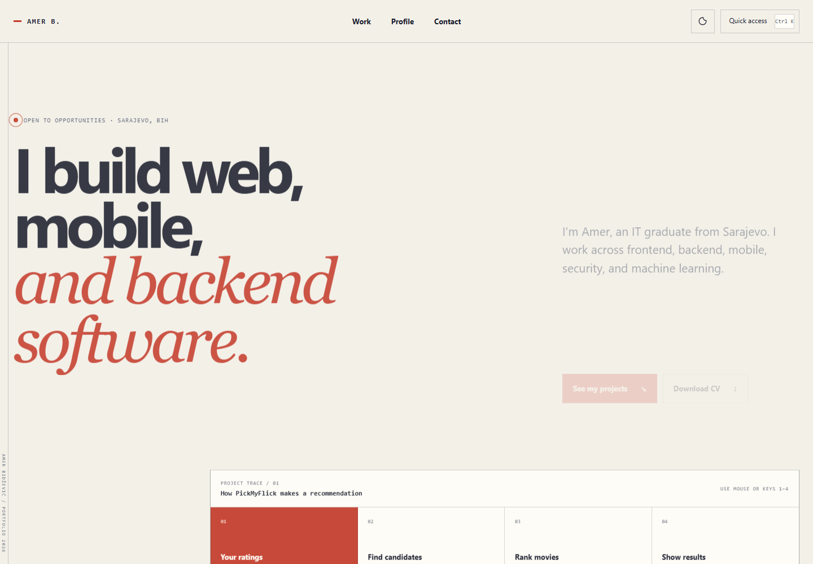
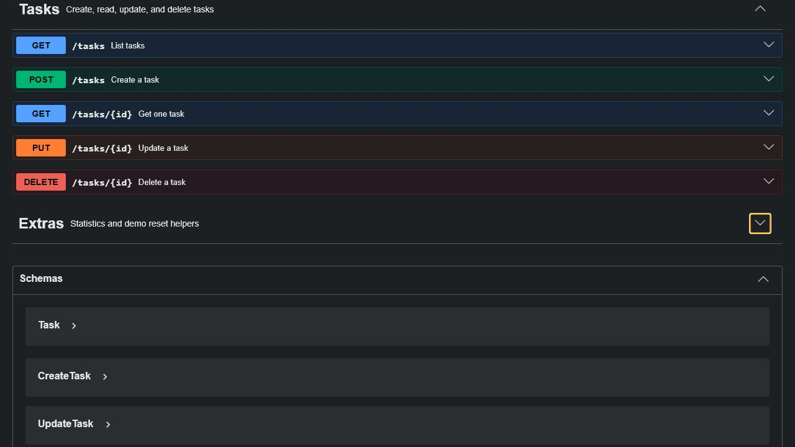

PickMyFlick
A hybrid movie recommender built around a Flask API, React interface, PostgreSQL data and an offline comparison across 603 MovieLens users.
Junior full-stack developer · Sarajevo
I work across interfaces, APIs, databases and authentication, then show the decisions and evidence behind the build.
Featured proof
These projects cover a recommendation system, a company internship build, a documented backend API and a working habit application. Each case separates what I built, what I decided and what actually works.

A hybrid movie recommender built around a Flask API, React interface, PostgreSQL data and an offline comparison across 603 MovieLens users.

A focused backend project with CRUD behavior, validation, persistent storage, authentication work, tests and usable API documentation.
What I can discuss
I would rather explain why a system was structured a certain way than stack technology names without context.
React and React Native flows shaped around what different users actually need to do.
REST endpoints, validation, relational storage, migrations and documented behavior.
Sessions, JWTs, MFA, recovery, rate limits and the trust boundaries around them.
Tests and measured comparisons where a result can honestly be quantified.
A little context
I am an Information Technology graduate who likes following a feature through the interface, API and database instead of treating each layer as someone else’s problem.